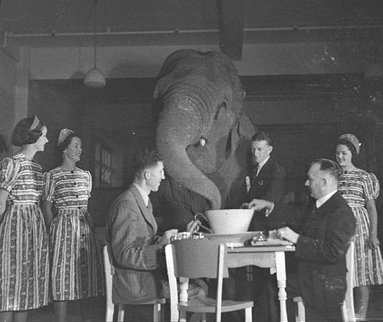

I get asked if I worry about AI taking over my job as a copywriter. AI has changed the nature of my work, and will continue to. But to believe that AI could take over my job is to misunderstand the nature of both AI and enjoyable writing. So what makes writing good, and why can't AI do it?
A taste of the unexpected and the value of being original
Consider these sentences:
Many years later, as he faced the firing squad, Colonel Aureliano Buendía was to remember that distant afternoon when his father took him to discover ice.Gabriel García Márquez, One Hundred Years of Solitude
I think, therefore IBM1988 ad slogan for IBM by Ogilvy & Mather
As Gregor Samsa awoke one morning from uneasy dreams, he found himself transformed in his bed into a gigantic insect.Franz Kafka, Metamorphosis
How did you feel when you read these?
I felt surprised, challenged and delighted. Any expectations I had were obliterated by the last word. I anticipated Descartes' famous "I think, therefore I am"; instead, I got International Business Machines? I scrambled around in my head, confused …and then I got it! I felt a little satisfaction. This is the joy of irony.
Now consider:
It was a dark and stormy night.
Our passion for X drives everything we do.
She was beautiful, but she didn't know it.
How did you enjoy reading these? I felt nothing. Except a bit ick. There was nothing original about them. Reading them was like looking at words on a packet of chewing gum. My immediate reaction is to ignore them at once and go and find something better to do.
Every day we are subject to an avalanche of text, consisting of, but not limited to, WhatsApp messages, posters on tube platforms, emails, labels on things, headlines, captions on social media, books. We don't read it all, but we do process it. The brain runs ahead of the eyes, filling in predictable bits so the eyes can skip past them. We read the most predictable text the least and unpredictable text the most. Irony captures our attention by breaking the patterns of predictability.
But irony ceases to surprise when we've heard the same phrase so many times. Familiar text does not challenge and reward us. We do not get the little spurt of dopamine we do when we solve the riddles that violate our expectations.
Let us concentrate on imagery. Consider:
But my body was like a harp, and her words and gestures were like fingers running upon the wires.James Joyce, Araby, Dubliners
Do you see it? The strings of the harp being played? Can you hear the staccato fluttering? Do you remember how it felt to be in love like this?
The helicopter hung above the building, urinating yellow light.Salman Rushdie, The Satanic Verses
This is less romantic but just as vivid.
Aristotle said that metaphor (which I extend to simile) brings a thing, perhaps an abstract thing, "before the eyes." It helps us to understand one thing in terms of another thing that can be felt. The more vivid and original the metaphor, the more we can experience it through our sensory memories, and understand the meaning in our bodies as well as our minds.
The greatest thing by far is to have a command of metaphorAristotle, Poetics
But a metaphor is a bit like a toboggan made of bread. It has very limited uses before it ceases to be any fun. Our minds make a shortcut to the meaning, without conjuring the images or sensations the words formerly elicited. Familiar imagery is not felt.
Consider: an Achilles' heel. Are you swept up in the myth of a great warrior defeated by Paris firing an arrow into the same heel his mother once held him by when she dipped him into the river Styx? Or do you think immediately of weakness?
What about a heart of gold? Are you moved by a beautiful mental vision of a shiny golden heart radiating love? Or do you think of a Neil Young song?
What about the elephant in the room? Do you go straight to the meaning, or do you see in your mind's eye a great elephant squashing a chair next to you, knocking stuff over with its great trunk?

These metaphors have become flat through familiarity. George Orwell called them "dying metaphors"; they have "lost all evocative power and are merely used because they save people the trouble of inventing phrases for themselves" (George Orwell, Politics and the English Language). And they may be forgiven for saving themselves the trouble, for being original all the time is hard. This is why people in my writing group gather every week to lament about it.
How AI works
Large Language Models (LLMs such as Claude and ChatGPT) are prediction machines, arguably like our brains. They use large neural networks and vast amounts of data to predict the most likely next word.
They are rewarded for being right rather than original. The model makes a series of probability distributions of possible words to come next, using the writing of everyone who has already written about this subject. It then chooses the centre of those probability distributions. Newer models are then trained using AI-generated text; every model gets a little closer to the centre of the probability distribution. This is why AI text sounds like we've read it many times before, with its clichés and dying metaphors. There suddenly appears to be an elephant in many rooms. And the writing seems flat. This doesn't work in an attention economy where people's attention gets pulled in different directions at once and wants novelty, novelty, novelty. You can ask it for randomness, and it will choose something further away from the centre of the distribution, but it will just sound a bit off. Its randomness isn't creative or meaningful.
One has to know how to use AI. I use it for outlines and research. It gives me helpful feedback. My fiancé enjoys getting Claude to tell him how brilliant his writing is. But Claude's writing is not brilliant. It can help you come up with original ideas to put into your own writing, but it can't write original writing on its own.
Pathos and human experience
In 2012, the US Centers for Disease Control and Prevention launched a campaign featuring former smokers living with the consequences of their smoking. This included a named, dying woman, Terrie Hall, who could only speak in a distorted, alien voice through a device in her throat. A paper in The Lancet reported that this campaign alone, in three months, led to "over a million Americans" attempting to quit smoking, and "more than 100,000" quitting long term. The campaign gave them no information they didn't already know, but something about it changed their minds.
Knowledge alone does not always motivate people. In order to be most convincing, one has to make the information felt. Aristotle identified pathos, the power to evoke emotion, as one of three modes of persuasion, along with ethos (credibility) and logos (reasoning, logic).
A skilled communicator understands the nuances of the audience's emotional landscape, and through this judges what to say and what not to say. Like the man who stood up in Washington in 1963 and delivered a pivotal speech in the civil rights movement. Of course, to evoke a feeling, it helps to know the feeling oneself. Martin Luther King grew up under segregation, witnessed unspeakable crimes, and was tired of the violence and injustice that were all he had ever known. Could his speech have had such pathos if he had not lived this suffering? Almost certainly not.
And it is less likely that AI could have written this speech. King builds up indignation in the beginning and then releases it as he reveals his vision, his dream. An AI model has no sense of emotional pressure and release. King talks of specific, lived experiences. This is important because we respond emotionally to what we can imagine; we can imagine specific scenes, not general abstractions. An AI model doesn't have lived experiences, and even when fed examples, it wouldn't know which specific examples would be most evocative.
Paul Simon would not have written the lyrics for the album Bridge Over Troubled Water if he had not once known poverty, loneliness and rejection ("I have squandered my resistance for a pocketful of mumbles / Such are promises"). Moving art comes from intense experiences. The most creative people I know feel more; they are more moved by beauty and recoil more from suffering (they also seem likely to be alcoholics). The artist's lived experience is indispensable to art (alcoholism less so).
AI has no true experience or feeling. It has only what William James calls knowledge-about ("knowledge of relations"). This is opposed to knowledge by acquaintance, meaning knowledge via experience, knowledge of what a pear tastes like, what the colour blue looks like. No amount of pear-taste knowledge-about can substitute for experiencing the real taste of a pear.
"You're an orphan, right? Will nods. Do you think I'd know the first thing about how hard your life has been, how you feel, who you are, because I read Oliver Twist? Does that encapsulate you? Personally, I don't give a shit about all that, because you know what? I can't learn anything from you I can't read in some fuckin' book."Sean Maguire (Robin Williams), Good Will Hunting (1997)
Knowledge by acquaintance is the source of energy that transmits the light. And AI cannot know knowledge by acquaintance until it learns how to become more human.
In any case, do you really want to seek pleasure in AI writing? It does not interest me at all. Even if it does write "well." I want to read writing with a soul behind it. When I read something that captures how I feel or once felt, I feel embraced. Some of the greatest moments of my life are when my readers say they felt the same. I read and write to feel like a part of the human race.